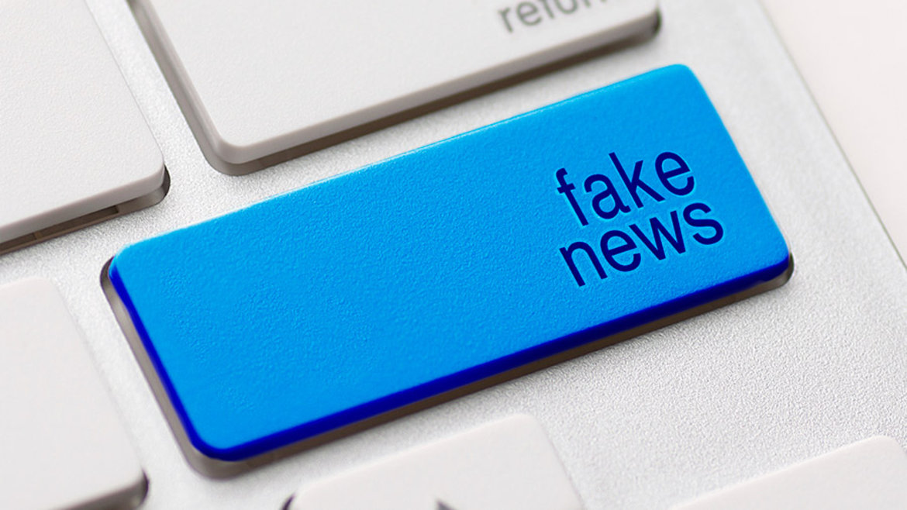
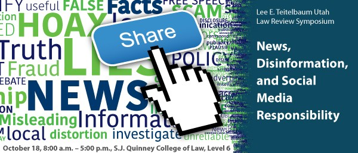

The Spread of Fake news and Information on The Internet
People in twenty-first century can get a lot of information on the internet allowing him or her to study, work, and address personal issues. The internet is also similar to a post office, which lets people send and receive emails. The internet has brought about a paperless age and has also increased the speed through one’s access or ability to spreads information. There are various search engines that one can use to get information in a few minutes. By comparing it to print media such a book, the web is superior as it saves the time required for studying or working. Even though the internet has brought a lot of conveniences in the human society, it also has also introduced some disadvantages that cannot be ignored. Therefore, it is significant to inform internet users about the reasons and the effect of the spread of fake news because the misinformation can mislead internet users to trust specific websites; On the other hand, if the phenomenon cannot be solved, the user of internet will no longer trust the information available on the web.
1. Fake News Has Been Existence since Ancient Era to the Internet Era Fake or biased news has existed since the beginning of human history. The people that control the flow of information can create fake stories to influence the public perspectives or regulate the treatment of a specific group in the community. According to the book, Influencing Machine, the author Brooke Gladstone describes the ancient Chinese society. She asserts that there were no journalists in every place for written language emerging in accient China, only Scribes that she describes as Publicists (Gladstone 3,4). Thousands of years ago, people wrote on different materials, such as bones, stones, or clay. Originally, they used the slates to record daily events and historical accounts. The scribes were treated with respect, and they amassed wealth and gained a positive reputation because they had the right to control the content in the texts. They controlled the rights to get knowledge, information and the approaches of expression in the community. For instance, in the article, “Combating Fake News in the Digital Age”, Joanna Burkhardt assets that, “Some of the information that has survived, carved in stone or baked on tablets or drawn in pictograms, extolled the wonder and power of the leaders. Often these messages were reminders to the common people that the leader controlled their lives” (Burkhardt 5). Through using the messages, leaders in the past expressed the information that would promote respect among the public and allow them to perform their duties smoothly. The people had limited information about their lives and believed that the information carved in the stone or baked on tablets was correct without verifying it. It shows that people in the past created biased information to exert public rule.
Before the internet came into existence, the various forms of media that were predominantly employed for disseminating the fake news were newspapers, magazines, television and radio. As noted, ancient media also had its way of allowing supplements and advertisements as the methods of paving the way for masking of real news. By the mid-1950s, television was the phenomena gluing and gathering people before the media box, and the fake content was telecasted at a time when millions of audiences would get access to the aired content. The fantasy reality shows would later bridge the gap between what was real and staged. The modern world has seen an evolution where the untrue information is published by seemingly professional websites, while programming of search engines as well as social media have proved to be the most effective platforms for creating the influential news.
Work cited
Allcott, Hunt and Matthew Gentzkow. "Social Media and Fake News in the 2016 Election." Journal of Economic Perspectives, vol. 31, no. 2, Spring2017, pp. 211-236. EBSCOhost, doi:10.1257/jep.31.2.211.
Adichie, Chimamanda Ngozi. "The Danger of a Single Story." TEDGlobal. TED Conferences LLC, Jul. 2009.
Burkhardt, Joanna M. "Combating Fake News in the Digital Age." Library Technology Reports, vol. 53, no. 8, Nov/Dec2017, pp. 5-33. EBSCOhost, ccsf.idm.oclc.org/login?url=http://search.ebscohost.com/login.aspx?direct=true&db=ehh&AN=126274669&site=eds-live.
